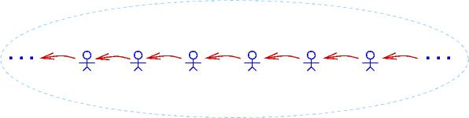

8. The Predicate-Logic Quantifiers
In the previous chapter, we studied how to combine primitive propositions with
the operators,
^ (math: ∧),
v (math: ∨),
--> (math: →), and
~ (math: ¬).
When we wrote propositions like (p ^ q) --> r, we pretended that p,
q, and r stood for complete, primitive statements like “It is raining”
or “x + 1 > 0”.
We did not try to disassemble p, q, and r.
Now it is time to decompose and analyze primitive propositions in terms of their
“verbs” (called predicates) and their “nouns” (called individuals).
This leads to predicate logic.
First, some background: When we study a particular “universe” or “domain”
consisting of “individuals”, we make assertions (propositions) about the
individuals in the domain.
Example domains are: the domain of all animals, the domain of U.S. Presidents,
the domain of days-of-the-week, the domain of crayon colors,
the domain of integers, the domain of strings, etc.
We assemble propositions by using the individuals in the domain along with some
predicates.
For example, for the domain of integers, we use predicates like == and
>, like this: 3 > 5, 2 * x == y + 1, etc.
(Here, 3 and 5 are individuals, and x and y are names of
individuals.)
As these examples show, we might also use functions, like * and +, to
compute new individuals.
For nonnumeric domains like humans, animals, and objects, predicates are written
in a function-call style, like this: hasFourLegs(_), isTheMotherOf(_,_),
isHuman(_), isOlderThan(_,_), etc.
So, if Lassie is an individual animal, we write hasFourLegs(Lassie) to
make the proposition, “Lassie has four legs”.
Another example is isOlderThan(GeorgeWashington, AbrahamLincoln), which uses
the individuals GeorgeWashington and AbrahamLincoln.
Predicate logic has two important new operators that let us write stronger
propositions than what we can do with mere predicates.
These operators are called quantifiers. The quantifers are “for all”
(FORALL; math: ∀), and “exists”
(EXIST; math: ∃).
In this chapter, we will learn to use the quantifiers to reason about data
structures.
The FORALL quantifier helps us write propositions about all the individuals
in a domain.
Say we consider the domain of animals.
The sentence, “All humans are mortal” is written like this:
FORALLx (isHuman(x) --> isMortal(x))
That is, if an individual, x, is human, then x is mortal also.
(Notice that dogs like Lassie are individuals in the domain, but the above
proposition cannot be used to show that Lassie is mortal, since dogs aren’t
human.
Sadly, dogs are nonetheless mortal.)
An arithmetic example looks like this: for the domain of ints, “every value is
less-than-or-equal to its square”:
A data-structure example looks like this: For array, r, we can assert that
every element of r is positive:
FORALLi ((i >= 0 ^ i < len(r)) --> r[i] > 0)
That is, for every index int, i, in the range of 0 up to (but not
including) len(r) (the length of r), the indexed element r[i] is
greater than 0.
The previous statement is often written in a “shorthand” like this:
FORALL 0 <= i < len(r), r[i] > 0
which we later use in many of our programming examples.
The EXIST quantifier helps us write propositions about specific individuals
in a domain, where the name of the individual is unimportant or unknown.
For example, we can say that Lassie has a mother like this:
EXISTx isMotherOf(x, Lassie)
(“There exists some x such that x is the mother of Lassie”.)
Here is how we write that every individual in the domain has a mother:
FORALLxEXISTy isMotherOf(y, x)
For the domain of integers, we can make assertions like these:
EXISTx (x * x = x)
EXISTy (y + 2 = 9)
FORALLx (x > 1) --> (EXISTy (y > 0 and y + 1 = x))
For array r, we can say that r holds at least one negative int like
this:
EXISTi (i >= 0 ^ i < len(r) ^ r[i] < 0)
(The shorthand version is EXIST 0 <= i < len(r), r[i] < 0.)
Lots more examples will follow.
With the new format of primitive propositions, we can write proofs like before:
isHuman(Socrates) --> isMortal(Socrates), isHuman(Socrates) |- isMortal(Socrates) ^ isHuman(Socrates)
1. isHuman(Socrates) --> isMortal(Socrates) premise
2. isHuman(Socrates) premise
3. isMortal(Socrates) -->e 1,2
4. isMortal(Socrates) ^ isHuman(Socrates) ^i 3,2
But more importantly, we will learn to prove claims like this:
FORALLx(isHuman(x) --> isMortal(x)), isHuman(Socrates) |- isMortal(Socrates)
8.1. The Universal quantifier and Its Deduction Rules
Like the other logical operators, FORALL has an introduction rule and an
elimination rule.
It works best to introduce the rules via examples.
First, here is the most famous claim in logic:
All humans are mortal.
Socrates is human.
Therefore, Socrates is mortal.
We express this ancient claim like this:
FORALLx (isHuman(x) --> isMortal(x)), isHuman(Socrates) |- isMortal(Socrates)
Clearly, we require a kind of matching/binding rule to prove that the human
individual, Socrates, is mortal. The rule is FORALLe
(“all elimination”):
1. FORALLx (isHuman(x) --> isMortal(x)) premise
2. isHuman(Socrates) premise
3. isHuman(Socrates) --> isMortal(Socrates) FORALLe 1
4. isMortal(Socrates) -->e 3,2
Line 3 shows that the claim on Line 1, which holds for all individuals in the
domain, can apply specifically to Socrates, an individual member of the
domain.
We use the new knowledge on Line 3 to reach the conclusion on Line 4.
FORALLe tailors a general claim, prefixed by FORALLx, to any individual
element (who replaces the x).
We see this in Line 3 above.
Here is the rule’s schematic:
FORALLx P_x
FORALLe: ------------
P_v that is, [v/x]P_x, where v is an individual in the domain
(Here, P_x stands for a proposition that contains some occurrences of x.
Recall that [v/x]P_x is “substitution notation”: substitute v for
occurrences of x in P_x.)
For example, from the premise, FORALLi (i + 1 > i), we apply FORALLe to
deduce [3/i](i + 1 > i), that is, 3 + 1 > 3.
The other deduction rule, FORALLi (“all-introduction”), deduces propositions
that are prefixed by FORALL.
Here is a motivating example, in the domain of integers:
FORALLn((n + 1) > n), FORALLn(n > (n - 1)) |- FORALLn((n + 1) > n ^ n > (n - 1))
That is, we wish to prove that for every possible int, the int is smaller than
its successor and larger than its predecessor.
How do we do this?
Clearly, we will not inspect all of ..., -2, -1, 0, 1, 2, ... and verify that
(-2 + 1) > -2 ^ -2 < (-2 - 1), (-1 + 1) > -1 ^ -1 < (-1 - 1), (0 + 1) > 0 ^ 0 < (0 - 1),
etc.!
Instead, we write a single, generic, general-purpose argument — a
“case analysis” — that applies to whichever, arbitrary int we would ever
consider.
Let a stand for the arbitrary int we will discuss.
The case analysis appears in the proof like this:
FORALLn ((n + 1) > n), FORALLn (n > (n - 1)) |- FORALLn ((n + 1) > n ^ n > (n - 1))
1. FORALLn ((n + 1) > n) premise
2. FORALLn (n > (n - 1)) premise
... 3. a
... 4. (a + 1) > a FORALLe 1
... 5. a > (a - 1) FORALLe 2
... 6. (a + 1) > a ^ a > (a - 1) ^i 4,5
7. FORALLn ((n + 1) > n ^ n > (n - 1)) FORALLi 3-6
Lines 3-6 are the generic argument: let a be the arbitrary/anybody integer
we discuss.
By Lines 1 and 2, we must have that (a + 1) > a and that a > (a - 1).
Line 6 uses ^i to show a has the property (a + 1) > a ^ a > (a - 1).
Since the argument in Lines 3-6 is not specific to any specific integer, we can
use the argument on all the individual integers – that is, we can substitute
-2 for a and the argument holds;
we can substitute -1 for a and the argument holds;
we can substitute 0 for a and the argument holds; and so on!
Line 7 is justified by the new deduction rule, FORALLi, which asserts that
the generic case analysis in Lines 3-6 applies to all the individual integers.
Here is the rule’s schematic:
... a (a must be a brand new name)
... P_a
FORALLi: ------------
FORALLx P_x (That is, P_x is [x/a]P_a.
Thus, a _does not appear_ in P_x, and
every premise and assumption visible
to FORALLx P_x _does not mention_ a)
To repeat this important idea: The rule says, to prove a claim of form,
FORALLx P_x, we undertake a case analysis:
we prove property P_a for an arbitrary member, a, of domain D.
(Call the element, “Mister a” — Mister arbitrary — Mister anybody —
Mister anonymous).
Since Mister a is a complete unknown, it stands for “everyone” in doman D.
We know that we can substitute whichever domain element, d, from domain
D we want into the proof and we get a proof of P_d.
In this way, we have proofs of P for all elements of domain D.
Here is the same idea, used in a proof about a domain of people:
“Everyone is healthy; everyone is happy.
Therefore, everyone is both healthy and happy”:
FORALLx isHealthy(x), FORALLy isHappy(y) |- FORALLz(isHealthy(z) ^ isHappy(z))
1. FORALLx isHealthy(x) premise
2. FORALLy isHappy(y) premise
... 3. a
... 4. isHealthy(a) FORALLe 1
... 5. isHappy(a) FORALLe 2
... 6. isHealthy(a) ^ isHappy(a) ^i 4,5
7. FORALLz(isHealthy(z) ^ isHappy(z)) FORALLi 3-6
Say that we have a domain of living beings.
This next example requires nested cases:
All humans are mortal
All mortals have soul
Therefore, all humans have soul
FORALLx (isHuman(x) --> isMortal(x)),
FORALLy (isMortal(y) --> hasSoul(y))
|- FORALLx (isHuman(x) --> hasSoul(x))
1. FORALLx (isHuman(x) --> isMortal(x)) premise
2. FORALLy (isMortal(y) --> hasSoul(y)) premise
... 3. a
... ... 4. isHuman(a) assumption
... ... 5. isHuman(a) --> isMortal(a) FORALLe 1
... ... 6. isMortal(a) -->e 4,3
... ... 7. isMortal(a) --> hasSoul(a) FORALLe 2
... ... 8. hasSoul(a) -->e 6,5
... 9. isHuman(a) --> hasSoul(a) -->i 4-8
10. FORALLx (isHuman(x) --> hasSoul(x)) FORALLi 3-9
Line 3 states that we use a to stand for an arbitrary individual of the
domain.
Line 4 starts a nested case, which assumes a is human.
Then we can prove that a has a soul, hence by -->i,
isHuman(a) --> hasSoul(a).
Since the outer case is stated in terms of the arbitrary, anonymous individual,
a, we can finish the proof on Line 10 by FORALLi.
Here is a last, important example.
Let the domain be the members of one family.
We can prove this truism:
Every (individual) family member who is healthy is also happy.
Therefore, if all the family members are healthy, then all the members are happy.
FORALLx (healthy(x) --> happy(x)) |- (FORALLy healthy(y)) --> (FORALLx happy(x))
1. FORALLx healthy(x) --> happy(x) premise
... 2. FORALLy healthy(y) assumption
... ... 3. a
... ... 4. healthy(a) FORALLe 4
... ... 5. healthy(a) --> happy(a) FORALLe 1
... ... 6. happy(a) -->e 5,4
... 7. FORALL x happy(x) FORALLi 3-6
8. (FORALLy healthy(y)) --> (FORALLx happy(x)) -->i 2-7
We commence by assuming all the family is healthy (Line 2).
Then, we consider an arbitrary/anonymous family member, a, and show that
healthy(a) is a fact (from Line 2).
Then we deduce happy(a).
Since a stands for anyone/everyone in the family, we use FORALLi to
conclude on Line 7 that all family members are happy.
Line 8 finishes.
Consider the converse claim; is it valid?
If all the family members are healthy, then all are happy.
Therefore, for every (individual) family member, if (s)he is healthy then
(s)he is also happy.
Well, no – perhaps the family is so close-knit that, if one one family member
is unhealthy; then other, healthy, family members might well be unhappy with
worry.
This is a subtle point, so take a moment and think about it!
Let’s try to prove the dubious claim and see where we get stuck:
(FORALLy healthy(y)) --> (FORALLx happy(x)) |-
FORALLx (healthy(x) --> happy(x))
1. (FORALLy healthy(y)) --> (FORALLx happy(x)) premise
... 2. a assumption
... ... 3. healthy(a) assumption WE ARE TRYING TO PROVE happy(a)?!
4. FORALLy healthy(y) FORALLi 2-3?? NO --- WE ARE TRYING TO FINISH
THE OUTER BLOCK BEFORE THE INNER ONE IS FINISHED!
No matter how you might try, you will see that the “block structure” of the
proofs warns us when we are making invalid deductions.
It is impossible to prove this claim.
8.1.1. More Examples
We state some standard exercises with FORALL, where the domains and
predicates are unimportant:
FORALLx F(x) |- FORALLy F(y)
1. FORALLx F(x) premise
... 2. a
... 3. F(a) FORALLe 1
4. FORALLy F(y) FORALLi 2-3
FORALLz (F(z) ^ G(z) |- (FORALLx F(x)) ^ (FORALLy G(y))
1. FORALLz (F(z) ^ G(z) premise
... 2. a
... 3. F(a) ^ G(z) FORALLe 1
... 4. F(a) ^e1 3
5. FORALLx F(x) FORALLi 2-4
... 6. b
... 7. F(b) ^ G(b) FORALLe 1
... 8. G(b) ^e2 7
9. FORALLy F(y) FORALLi 6-8
10. (FORALLx F(x)) ^ (FORALLy G(y)) ^i 5,9
The earlier example about healthy and happy families illustrates an important
structural relationship between FORALL and -->:
FORALLx (F(x) --> G(x)) |- (FORALLx F(x)) --> (FORALLx G(x))
can be proved, but the converse cannot.
This last one is reasonable but the proof is a bit tricky because of the nested
subproofs:
FORALLx FORALLy F(x,y) |- FORALLy FORALLx F(x,y)
1. FORALLx FORALLy F(x,y) premise
... 2. b
... ... 3. a
... ... 4. FORALLy F(a,y) FORALLe 1
... ... 5. F(a,b) FORALLe 4
... 6. FORALLx F(x,y) FORALLi 3-5
7. FORALLy FORALLx F(x,y) FORALLi 2-6
8.1.2. Tactics for the FORALL-rules
As in the previous chapter, we now give advice as to when to use the FORALLi
and FORALLe rules.
(***) FORALLi-tactic:
To prove Premises |- FORALLx P_x,
- assume
a, for a new, anonymous “Mister a“
- prove
Premises |- P_a
- finish with
FORALLi.
The proof structure looks like this:
1. Premises premise
... i. a
(fill in)
... j. P_a
k. FORALLx P_x FORALLi i-j
This tactic was applied in Lines 2-7 of the previous (correct) example
proof.
(*) FORALLe-tactic:
To prove Premises, FORALLx P_x |- Q, then for an individual, i, that
appears in the proof so far, use the FORALLe rule to deduce the new fact,
P_i:
1. Premises premise
2. FORALLx P_x premise
. . .
j. P_i FORALLe 2
(fill in)
k. Q
This tactic should be used only when it is clear that the new fact makes a
significant step forwards to finishing the proof.
Steps 4 and 5 of the previous (correct) example proof used this tactic.
8.1.3. Other Ways of Proving Propositions with The Universal Quantifier
How do we prove an assertion of the form, FORALLx P_x?
We just saw that FORALLi can do this for any domain whatsoever.
But there are, in fact, three different approaches, depending on the form of
domain we use:
Approach 1: use conjunctions for a finite domain
Say that the domain we study is a finite set, D = {e0, e1, ..., ek}.
(An example domain is the days of the week,
{sun, mon, tues, weds, thurs, fri, sat}.)
This makes FORALLx P_x just an abbreviation itself of this much-longer
assertion:
For example, when the domain is the days of the week, the assertion,
FORALLd isBurgerKingDay(d), abbreviates:
isBurgerKingDay(sun) ^ isBurgerKingDay(mon) ^ isBurgerKingDay(tues) ^ ... ^ isBurgerKingDay(sat)
To prove such a FORALLx P_x for a finite domain D, we must prove
P_ei, for each and every ei in D.
We can use this approach when we are analyzing all the elements of a
finite-length array.
Say that array r has length 4.
We can say that the domain of its indexes is {0, 1, 2, 3}.
So, if we wish to prove that FORALL 0 <= i < 4, r[i] > 0, we need only
prove that r[0] > 0 ^ r[1] > 0 ^ r[2] > 0 ^ r[3] > 0.
Approach 2: for the domain of nonnegative ints, use mathematical induction
The domain, Nat = {0, 1, 2, ... } is infinite, so we cannot use the
previous technique to prove properties like FORALL n > 0, (n + 1) > n –
we would have to write separate proofs that
0 + 1 > 0, 1 + 1 > 1, 2 + 1 > 2, ..., forever.
But we can use mathematical induction.
Remember how it works: we write two proofs:
- basis case: a proof of
P_0
- induction case: a proof of
P_k --> P_k+1, where k is a brand new
variable name
(At this point, it would be a very good idea for you to review the Section on
An Introduction to Mathematical Induction.)
There is a variation of mathematical induction that we use when proving loop
invariants of the form, FORALL 0 <= k < count, P_k:
We start with this assertion, at point (a):
This assertion is true because it defines an empty range of integers –
there are no elements in the domain defined by
{k:int | 0 <= k ^ k < 0}.
Hence, for all the elements, k, in the empty domain, we have proved
``P_k``(!)
This proves the Basis case.
Using the loop invariant (the induction hypothesis), starting at point
(b), we analyze the loop;s body and prove:
P_count
That is, P holds for the value, count.
Using ^i we get:
FORALL 0 <= k < count, P_k ^ P_count
This can be understood as:
(P_0 ^ P_1 ^ P_2 ^ ... ^ P_count-1) ^ P_count
Based on what we read in Approach 1 earlier, we combine the facts into this
one:
FORALL 0 <= k < count + 1, P_k
Since the loop’s body ends with the assignment, count = count + 1, we
recover the loop invariant at point (c).
This is the proof of the induction case.
We will see several uses of this approach in the next Section.
Approach 3: for any domain, finite or infinite whatsoever, use the
FORALLi-law
Finally, we might be using a large domain that is not as organized as the
nonnegatives, 0,1,2,....
Maybe the domain is the domain of all humans or all the citizens of Peru or
the members of the Republican party or all the objects on Planet Earth.
How can we prove FORALL x P_x for such huge collections?
To prove a claim of form, FORALLx P_x, for an arbitrary domain, we
undertake a kind of case analysis: we prove property P_a for an
arbitrary member, a, of domain D.
(Call the element, “Mister a” — Mister arbitrary — Mister anybody —
Mister anonymous).
Since Mister a is a complete unknown, it stands for “everyone” in doman
D.
We know that we can substitute whichever domain element, d from domain
D, we want into the proof and we get a proof of P_d.
In this way, we have proofs of P for all elements of domain D.
This is the idea behind the FORALLi-rule.
8.1.4. Application of The Universal Quantifier to Programming Functions
We have been using the rules for the universal quantifier every time we call a
function.
A function’s parameter names are like the variables x and y in
FORALLx and FORALLy.
Here is an example:
def fac(n) :
"""
{ pre n >= 0
post ans == n!
return ans }
"""
We saw in the previous chapter that the pre- and post-condition can be combined
into this compound proposition:
(n >= 0) --> (fac(n) == n!)
which describes fac‘s behavior in terms of name n.
But n is a parameter name that is internal to fac‘s code.
A more proper specification, one that makes sense to fac‘s caller, is:
FORALLn ((n >= 0) --> (fac(n) == n!))
That is, “for all possible int arguments, if the argument is nonnegative, then
fac computes the argument’s factorial”.
We use this logical propery when we call the function.
Here is the proof of it:
x = fac(6)
"""
{ 1. FORALLn((n >= 0) --> (fac(n) == n!)) premise (about fac )
2. 6 >= 0 algebra
3. (6 >= 0) --> (fac(6) == 6!) FORALLe 1
4. fac(6) == 6! -->e 3,2
5. x == fac(6) premise (the assign law)
6. x == 6! subst 4,5 }
"""
FORALLe applies the function’s logical property to its argument.
The function-call law we learned in the Chapter on Functions and Procedures
hid the FORALL – we weren’t ready for it yet!
But the universal quantifier is implicit in the description of every function we
call.
When we wrote the coding of fac, we also built a proof that fac computes and
returns n!, for input parameter name, n.
We didn’t know if n will equal 1 or 9 or 99999 – we just call
it n and work with the name.
This is just a “Mr. anybody”, exactly as we have been using in our case analyses
that finish with FORALLi.
The rule for function building hides the use of FORALLi – we were not
ready for it in the Functions and Procedures chapter.
But writing a function is the same thing as writing a proof that finishes with
FORALLi.
8.1.5. Application of The Universal Quantifier to Data Structures
A data structure is a container for holding elements from a domain, and we often
use universal quantifiers to write assertions about the data structure and how
to compute upon it.
We use the FORALLi and FORALLe rules to reason about the elements that
are inserted and removed from the data structure.
We use arrays (lists) in the examples in this chapter.
First, recall these Python operators for arrays:
For array r, r.append(e) adds element e to the end of r:
a = [2, 3, 5, 7]
print a # prints [2, 3, 5, 7]
a.append(11)
print a # prints [2, 3, 5, 7, 11]
For array r, r[:index] computes a new array that is the “slice” of
r up to and not including r[index]:
c = [2, 3, 5, 7, 11, 13, 17, 19]
e = c[:6]
print e # prints [2, 3, 5, 7, 11, 13]
f = c[:0]
print f # prints []
print c # prints [2, 3, 5, 7, 11, 13, 17, 19]
For array, r, r[index;] computes a new array that is the “slice” of
r from r[index] to the end of r:
c = [2, 3, 5, 7, 11, 13, 17, 19]
g = c[4:]
print g # prints [11, 13, 17, 19]
h = c[:8]
print h # prints []
print c # prints [2, 3, 5, 7, 11, 13, 17, 19]
Here is an example; it is math-induction-like (“Approach 2” mentioned earlier).
We outline below how a procedure resets all the elements of an array (list) to
zeros:
def zeroOut(a) :
"""
{ pre isIntArray(a)
post FORALL 0 <= i < len(a), a[i] == 0 }
"""
j = 0
while j != len(a) :
"""{ invariant FORALL 0 <= i < j, a[i] == 0 }"""
a[j] = 0
"""
{ assert FORALL 0 <= i < j, a[i] == 0 ^ a[j] = 0
therefore, FORALL 0 <= i < j+1, a[i] == 0 (*) }
"""
j = j + 1
"""{ assert FORALL 0 <= i < j, a[i] == 0 }"""
#END LOOP
"""
{ assert j == len(a) ^ (FORALL 0 <= i < len(a), a[i] == 0)
therefore, FORALL 0 <= i < len(a), a[i] == 0 }
"""
We state that the range of elements from 0 up to (and not including) j
are reset to 0 by stating:
FORALL 0 <= i < j, a[i] == 0
This loop invariant leads to the goal as j counts through the range of 0
up to the length of array a.
At the point marked (*), there is an informal use of FORALLi.
Here is a second, similar example:
def doubleArray(a) :
"""doubleArray builds a new array that holds array a's values *2"""
"""
{ pre: isIntArray(a)
post: isIntArray(answer) ^ len(answer) == len(a)
^ FORALL 0 <= i < len(a), answer[i] == 2 * a[i] }
"""
index = 0
answer = []
while index != len(a) :
"""
{ invariant isIntArray(answer) ^ len(answer) == index ^
FORALL 0 <= i < index, answer[i] == 2 * a[i] }
"""
"""{ assert: index != len(a) ^ invariant }"""
answer.append([a[index]*2)
"""
{ assert: invariant ^ answer[index] == 2 * a[index]
implies: FORALL 0 <= i < index+1, answer[i] == 2 * a[i] }
""" # (see Approach 2)
index = index + 1
"""{ assert: invariant }"""
"""
{ assert: index == len(a) ^ invariant
implies: isIntArray(answer) ^ len(answer) == len(a)
implies: FORALL 0 <= i < len(a), answer[i] == 2 * a[i] }
"""
return answer
Notice how the postcondition notes that the answer array is the same length as
the parameter array.
This prevents the function’s code from misbehaving and adding junk to the end of
the answer array.
See the Case Studies for more examples.
8.2. The Existential Quantifier
The existential quantifier, EXIST (math: ∃), means
“there exists” or “there is”.
We use this phrase when we do not care about the name of the individual involved
in our claim.
Here are examples:
There is a mouse in the house: EXISTm (isMouse(m) ^ inHouse(m))
(We don't care about the mouse's name.)
Someone ate my cookie: EXISTx ateMyCookie(x)
There is a number that equals its own square: EXISTn n == n*n
For every int, there is an int that is smaller: FORALLx EXISTy y < x
If we have a fact about an individual in a domain, we can use the fact to deduce
a fact that begins with an existential quantifier.
For example, if we know that:
isHuman(Socrates) ^ isMortal(Socrates)
surely we can conclude that:
EXISTh (isHuman(h) ^ isMortal(h))
that is, “there is someone who is human and mortal”.
The identity of the human is no longer important to us.
In the next section, we see that the EXISTi-rule makes such deductions.
8.2.1. The Existential-Introduction Rule
Often EXIST is used to “hide” secret information.
Consider these Pat Sajack musings from a typical game of Wheel of Fortune:
Pat thinks: “There is an ‘E’ covered over on Square 14 of the game board”.
In predicate logic, this can be written:
isCovered(Square14) ^ holds(Square14,'E').
Pat thinks: “Wait – I can’t say that on TV! Perhaps I can say,
There is a vowel covered on Square 14 of the game board”.
In predicate logic, this is written:
isCovered(Square14) ^ (EXISTc isVowel(c) ^ holds(Square14,c)).
In this way, Pat does not reveal the letter to the game players and TV
viewers.
Because it isn’t fair to tell the players which squares hold vowels, Pat
announces on the air,
“There is a vowel that is still covered on the game board”:
EXISTs (isSquare(s) ^ isCovered(s) ^ (EXISTc isVowel(c) ^ holds(s,c)))
This statement hides the specific square and letter that Pat is thinking
about.
Pat’s announcement was deduced from its predecessors by means of the
EXISTi-rule, which we see in a moment.
What can a game player do with Pat’s uttered statement?
A player might deduce these useful facts:
There is a square still covered: EXISTs isSquare(s) ^ isCovered(s)
There is a vowel: EXISTc isVowel(c)
There is a covered letter, A, E, I, O, U (assuming the
vowels are exactly A, E, I, O, U):
EXISTs isSquare(s) ^ isCovered(s) ^ (holds(s,'A') v holds(s,'E') v holds(s,'I') v holds(s,'O') v holds(s,'U'))
Although the game player does not know the letter and square that Pat Sajak
“hid” with his statement, the player can still make useful deductions.
We will use the EXISTe rule to deduce these style of propositions.
EXIST-Introduction Rule
The rule for EXISTi has this format:
P_d where d is an individual in the domain D
EXISTi: ------------
EXISTx P_x
The EXISTi rule says, if we locate an individual d (a “witness”, as it
is called by logicians) that makes P true, then surely we can say there
exists someone that has P and hide the identity of the individual/witness.
The rule was used in the previous section in a tiny example:
isHuman(Socrates), isMortal(Socrates) |- EXISTh (isHuman(h) ^ isMortal(h))
1. isHuman(Socrates) premise
2. isMortal(Socrates) premise
3. isHuman(Socrates) ^ isMortal(Socrates) ^i 1,2
4. EXISTh (isHuman(h) ^ isMortal(h)) EXISTi 3
Since Socrates is an individual that is both human and mortal, we deduce
Line 3.
Line 4 “hides” Socrates‘ name.
Let’s do a Wheel-Of-Fortune example: Pat Sajak uses two premises and the
EXISTi rule to deduce a new conclusion:
isVowel('E'), holds(Square14,'E') |- EXISTc(isVowel(c) ^ EXISTs holds(s,c))
1. isVowel('E') premise
2. holds(Square14,'E') premise
3. EXISTs holds(s,'E') EXISTi 2
4. isVowel('E') ^ EXISTs holds(s,'E') ^i 1,3
5. EXISTc(isVowel(c) ^ EXISTs holds(s,c)) EXISTi 4
Line 3 hides the number of the square (“there is a square that holds ‘E’”), and
Line 5 hides the ‘E’ (“there is a letter that is a vowel and there is a square
that holds the letter”).
From the same two premises we can also prove this:
1. isVowel('E') premise
2. holds(Square14,'E') premise
3. isVowel('E') ^ holds(Square14,'E') ^i 1,3
4. EXISTs(isVowel('E') ^ holds(s,'E')) EXISTi 3
5. EXISTcEXISTs(isVowel(s) ^ holds(s,c)) EXISTi 4
This reads, “there are a letter and square such that the letter is a vowel and
the square holds the letter”.
The proposition differs slightly from the previous one, but the two seem to have
identical information content.
(When we learn the EXISTe-rule, we can prove the two conclusions have
identical content.)
The EXIST-Elimination Rule
Since the EXISTi-rule constructs propositions that begin with EXIST, the
EXISTe-rule disassembles propositions that begin with EXIST.
The new rule employs a subtle case analysis.
Here is a quick example (in the universe of things on planet Earth), to get our
bearings:
All humans are mortal
Someone is human
Therefore, someone is mortal
We don’t know the name of the individual human, but it does not matter –
we can still conclude someone is mortal.
The steps we will take go like this:
* Since "someone is human" and since we don't know his/her name, we'll just make
up our own name for them – “Mister A”.
So, we assume that “Mr. A is human”.
- We use the logic rules we already know to prove that “Mr. A is mortal”.
- Therefore “someone is mortal” and their name does not matter.
This approach is coded into the last logic law, EXISTe (exists-elimination).
Say we have a premise of the form, EXISTx P_x.
Since we do not know the name of the individual “hidden” behind the
EXISTx,
we make up a name for it, say a, and discuss what must follow from the
assumption that P_a holds true:
... a P_a assumption (where a is a new, fresh name)
EXISTx P_x ... Q
EXISTe: ------------------------- (a MUST NOT appear in Q)
Q
That is, if we can deduce Q from P_a, and we do not mention a within
Q, then it means Q can be deduced no matter what name the hidden
individual has.
So, Q follows from EXISTx P_x.
We can work the previous example, with EXISTe:
All humans are mortal
Someone is human
Therefore, someone is mortal
We make up the name, a, for the individual whose name we do not know, and
do a case analysis:
FORALLh(isHuman(h) --> isMortal(h)), EXISTx isHuman(x) |- EXISTy isMortal(y)
1. FORALLh(isHuman(h) --> isMortal(h)) premise
2. EXISTx isHuman(x) premise
... 3. a isHuman(a) assumption
... 4. isHuman(a) --> isMortal(a) FORALLe 1
... 5. isMortal(a) -->e 4,3
... 6. EXISTy isMortal(y) EXISTi 5
7. EXISTy isMortal(y) EXISTe 2, 3-6
Line 3 proposes the name a and the assumption that isHuman(a).
The case analysis leads to Line 6, which says that someone is mortal.
(We never learned the individual’s name!)
Since Line 6 does not explicitly mention the made-up name, a, we use Line 7
to repeat Line 6 – without knowing the name of the individual “hiding” inside
Line 2, we made a case analysis in Lines 3-6 that prove the result, anyway.
This is how EXISTe works.
To repeat: The EXISTe rule describes how to discuss an anonymous individual
(a witness) without knowing/revealing its identity:
Assume the witness’s name is Mister a (“Mister Anonymous”) and that
Mister a makes P true.
Then, we deduce some fact, Q, that holds even though we don’t know who is
Mister a.
The restriction on the EXISTe rule (Q cannot mention a) enforces
that we have no extra information about the identity of Mister a – the name
a must not leave the subproof.
Here is a Wheel-of-Fortune example that uses EXISTe:
EXISTc (isVowel(c) ^ EXISTs holds(s,c)) |- EXISTy isVowel(y)
1. EXISTc (isVowel(c) ^ EXISTs holds(s,c)) premise
... 2. a isVowel(a) ^ EXISTs holds(s,a) assumption
... 3. isVowel(a) ^e1 2
... 4. EXISTy isVowel(y) EXISTi 3
5. EXISTy EXISTy isVowel(y) EXISTe 1,2-4
We do not know the identity of the vowel held in an unknown square, but this
does not prevent us from concluding that there is a vowel.
Standard Examples
For practice, we do some standard examples:
EXISTx P(x) |- EXISTy P(y)
1. EXISTx P(x) premise
... 2. a P(a) assumption
... 3. EXISTy P(y) EXISTi 2
4. EXISTy P(y) EXISTe 1,2-3
EXISTx(F(x) ^ G(x)) |- (EXISTy F(y)) ^ (EXISTz G(z))
1. EXISTx(F(x) ^ G(x)) premise
... 2. a F(a) ^ G(a) assumption
... 3. F(a) ^e1 2
... 4. EXISTy F(y) EXISTi 3
... 5. G(a) ^e2 2
... 6. EXISTz G(z) EXISTi 5
... 7. (EXISTy F(y)) ^ (EXISTz G(z)) ^i 4,6
8. (EXISTy F(y)) ^ (EXISTz G(z)) EXISTe 1, 2-7
Notice that you cannot prove the converse:
(EXISTy F(y)) ^ (EXISTz G(z)) |- EXISTx(F(x) ^ G(x)).
For example, say that the universe of discussion is the cast of Wheel of
Fortune, and F == isMale and G == isFemale.
Clearly, Pat Sajak is male and Vanna White is female, so
(EXISTy F(y)) ^ (EXISTz G(z)) is a true premise.
But EXISTx(F(x) ^ G(x)) does not follow.
The following proof uses the ve-tactic – a cases analysis.
See the assumptions at lines 3 and 6, based on Line 2:
EXISTx (P(x) v Q(x)) |- (EXISTx P(x)) v (EXISTx Q(x))
1. EXISTx (P(x) v Q(x)) premise
... 2. a P(a) v Q(a) assumption
... ... 3. P(a) assumption
... ... 4. EXISTx P(x) EXISTi 3
... ... 5. (EXISTx P(x)) v (EXISTx Q(x)) vi1 4
... ... 6. Q(a) assumption
... ... 7. EXISTx Q(x) EXISTi 6
... ... 8. (EXISTx P(x)) v (EXISTx Q(x)) vi2 7
... 9. (EXISTx P(x)) v (EXISTx Q(x)) ve 2,3-5,6-8
11. (EXISTx P(x)) v (EXISTx Q(x)) EXISTe 1,2-9
As an exercise, prove the converse of the above:
(EXISTx P(x)) v (EXISTx Q(x)) |- EXISTx (P(x) v Q(x)).
An Important Example
We finish with this crucial example.
We use the domain of people:
EXISTx FORALLy isBossOf(x,y)
Read this as, “there is someone who is the boss of everyone”.
From this strong fact we can prove that everyone has a boss, that is,
FORALLuEXISTv isBossOf(v,u):
EXISTxFORALLy isBossOf(x,y) |- FORALLuEXISTv isBossOf(v,u)
1. EXISTxFORALLy isBossOf(x,y) premise
... 2. b FORALLy isBossOf(b,y) assumption
... ... 3. a
... ... 4. isBossOf(b,a) FORALLe 2
... ... 5. EXISTv isBossOf(v,a) EXISTi 4
... 6. FORALLuEXISTv isBossOf(v,u) FORALLi 3-5
7. FORALLuEXISTv bossOf(v,u) EXISTe 1,3-5
In the above proof, we let b be our made-up name for the boss-of-everyone.
So, we have the assumption that FORALLy isBossOf(b,y).
Next, we let a be “anybody at all” who we might examine in the domain of
people.
The proof exposes that the boss of “anybody at all” in the domain must always be
b.
FORALLi and then EXISTi finish the proof.
Here is the proof worked again, with the subproofs swapped:
EXISTxFORALLy isBossOf(x,y) |- FORALLuEXISTv isBossOf(v,u)
1. EXISTxFORALLy isBossOf(x,y) premise
... 2. a
... ... 3. b FORALLy isBossOf(b,y) assumption
... ... 4. isBossOf(b,a) FORALLe 3
... ... 5. EXISTv isBossOf(v,a) EXISTi 4
... 6. EXISTv bossOf(v,a) EXISTe 1,3-5
7. FORALLuEXISTv isBossOf(v,u) FORALLi 2-6
Can we prove the converse?
That is, if everyone has a boss, then there is one boss who is the boss of
everyone?
FORALLuEXISTv isBossOf(v,u) |- EXISTxFORALLy isBossOf(x,y) ???
No – we can try, but we get stuck:
1. FORALLuEXISTv isBossOf(v,u) premise
... 2. a
... 3. EXISTv isBossOf(v,a) FORALLe 1
... ... 4. b isBossOf(b,a) assumption
5. FORALLy isBoss(b,y) FORALLi 2-5 NO --- THIS PROOF IS TRYING TO FINISH
THE OUTER SUBPROOF WITHOUT FINISHING THE INNER ONE FIRST.
We see that the “block structure” of the proofs warns us when we are making
invalid deductions.
It is interesting that we can prove the following:
EXISTxFORALLy isBossOf(x,y)
|- EXISTz isBossOf(z,z)
(“if someone is the boss of everyone, then someone is their own boss”):
EXISTxFORALLy isBossOf(x,y) |- FORALLuEXISTv isBossOf(v,u)
1. EXISTxFORALLy isBossOf(x,y) premise
... 2. b FORALLy isBossOf(b,y) assumption
... 3. isBossOf(b,b) FORALLe 2
... 4. EXISTz isBossOf(z,z) EXISTi 4
5. EXISTz bossOf(z,z) EXISTe 1,2-4
Line 3 exposes that the “big boss”, b, must be its own boss.
Domains and Models
The examples of bosses and workers illustrate these points:
You must state the domain of individuals when you state premises.
In the bosses-workers examples, the domain is a collection of people.
Both the bosses and the workers belong to that domain.
Here are three drawings of possible different domains, where an arrow,
person1 —> person2, means that person1 is the boss of
person2:
Notice that FORALLuEXISTv isBossOf(v,u) (“everyone has a boss”) holds
true for the first two domains but not the third.
EXISTxFORALLy isBossOf(x,y) holds true for only the second domain.
When we make a proof of P |- Q and P holds true for a domain,
then Q must also hold true for that same domain.
We proved that EXISTxFORALLy isBossOf(x,y) |- EXISTz isBossOf(z,z), and
sure enough, in the second example domain, EXISTz isBossOf(z,z) holds
true.
Our logic system is designed to work in this way!
When we do a logic proof, we are generating new facts that must hold true for
any domain for which the premises hold true.
This property is called soundness of the logic, and we will examine it more
closely in a later section in this chapter.
A domain can have infinitely many individuals.
Here is a drawing of a domain of infinitely many people, where each person
bosses the person to their right:

In this domain, FORALLuEXISTv isBossOf(v,u) holds true as does
FORALLuEXISTv isBossOf(u,v) (“everyone bosses someone”), but
EXISTz isBossOf(z,z) does not hold true.
The third example domain is famous – it is just the integer domain, where
isBossOf is actually >:
. . . < -3 < -2 < -1 < 0 < 1 < 2 < 3 < . . .
Indeed, one of the main applications of logic is proving properties of numbers.
This leads to a famous question:
Is it possible to write a collection of premises from which we can deduce
(make proofs of) all the logical properties that hold true for the domain of
integers?
The answer is NO.
In the 1920s, Kurt Goedel, a German PhD student, proved that the integers, along
with +, -, *, /, are so complex that it is impossible to ever
formulate a finite set (or even an algorithmically defined infinite set) of
premises that generate all the true properties of the integers.
Goedel’s result, known as the First Incompleteness Theorem, set mathematics
back on its heels and directly led to the formulation of theoretical computer
science (of which this course is one small part).
There is more material about Goedel’s work at the end of this chapter.
Tactics for The EXIST-Rules
There are two tactics; neither is easy to master:
(***) EXISTe-tactic:
To prove Premises, EXISTx P_x |- Q,
- assume
a and P_a, where a is a brand new anonymous name
- prove
Premises, P_a |- Q
- apply
EXISTe
The proof looks like this:
1. Premises premise
2. EXISTx P_x premise
... i. a P_a assumption
(fill in)
... j. Q (does not mention a!)
k. Q EXISTe 2,i-j
(*) EXISTi-tactic:
To prove Premises |- EXISTx P_x, try to prove P_e for some e that
already appears in the partially completed proof.
Finish with EXISTi:
1. Premises premise
. . .
i. ...e...
(fill in)
j. P_e
k. EXISTx P_x EXISTi j
Look at the Wheel-of-Fortune proofs for instances where these tactics were
applied.
8.2.2. Applications of The Existential Quantifier
Since an existential quantifier hides knowledge, it is useful to describe a
function that returns some but not all the information that the function
computes.
Here is a simple example, for a computerized Wheel-of-Fortune game:
board = ... """{ invariant: isStringArray(board) ^ len(board) > 0 }"""
def gameOver() :
"""examines board to see if all squares uncovered. Returns True if so,
otherwise returns False."""
"""{ gameOver_pre true }"""
"""
{ gameOver_post answer --> ~(EXIST 0 <= i < len(board), board[i] == "covered")
^ ~answer --> (EXIST 0 <= i < len(board), board[i] == "covered") }
"""
answer = True
... while loop that searches board for a board[k] == "covered";
if it finds one, it resets answer = False ...
return answer
The computerized Pat Sajak would use this function like this:
done = gameOver()
if done :
print "We have a winner! Time for a commercial!"
else :
print "There is still a letter that is covered. Let's continue!"
Here is the relevant deduction:
done = gameOver()
"""{ assert: [done/answer]gameOver_post }"""
if done :
"""
{ 1. done premise
2. [done/answer]gameOver_post premise
3. done --> ~(EXIST 0 < i < len(board), board[i] == "covered") ^e 2
4. ~(EXIST 0 < i < len(board), board[i] == "covered") -->e 3,1 }
"""
print "We have a winner! Time for a commercial!"
else :
"""
{ 1. ~done premise
2. [done/answer]gameOver_post premise
3. ~done --> (EXIST 0 < i < len(board), board[i] == "covered") ^e 2
4. EXIST 0 < i < len(board), board[i] == "covered" -->e 3,1 }
"""
print "There is still a letter that is covered. Let's continue!"
Notice that the answer returned by gameOver hides which square on the
board is still covered (== "covered").
We repeat an example from a previous chapter to show another use of the
existential:
def delete(c, s) :
"""delete locates an occurrence of c in s and
removes it and returns the resulting string.
If c is not in s, a copy of s is returned, unchanged.
"""
"""
{ pre: isChar(c) ^ isString(s)
post: (EXIST 0 <= k < len(s), s[k] == c ^ answer == s[:k] + s[k+1:])
v
(FORALL 0 <= i < len(s), s[i] != c) ^ answer == s }
"""
index = 0
found = False
while index != len(s) and not found :
"""
{ invariant (FORALL 0 <= i < index, s[i] != c) ^
(found --> s[index] == c) }
"""
if s[index] == c :
found = True
else :
index = index + 1
"""{ assert: (index == len(s) v found) ^ above invariant }"""
if found :
answer = s[:index] + s[index+1:]
"""
{ 1. found premise
2. answer == s[:index] + s[index+1:] premise
3. invariant premise
4. (found --> s[index] == c) ^e 3
5. s[index] == c -->e 4,1
6. s[index] == c ^ answer == s[:index] + s[index+1:] ^i 5,2
7. 0 <= index < len(s) algebra 5
8. EXIST 0 <= k < len(s), s[k] == c ^ answer == s[:k] + s[k+1:] EXISTi 7,6 (where [k/index]) }
"""
else :
answer = s
"""
{ 1. ~found premise
2. answer == s premise
3. (index == len(s) v found) premise
4. invariant premise
5. index == len(s) by P v Q, ~Q |- P, 3,1
6. FORALL 0 <= i < index, s[i] != c ^e 4
7. FORALL 0 <= i < len(s), s[i] != c substitution 5,6
8. (FORALL 0 <= i < len(s), s[i] != c) ^ answer == s ^i 7,2 }
"""
return answer
The EXISTi rule is used inside the then-arm of the last conditional, as
shown above.
It is important that delete hide the value of its local variable, index,
from appearing in its postcondition, because we do not want confusion like this:
index = 2
t = "abcd"
u = delete("a", t)
"""{ at this point, we certainly cannot assert that t[2] = "a"! }"""
8.2.3. The Forwards Assignment Law Uses an Existential Quantifier
The original, proper statement of the forwards assignment law reads like this:
"""{ assert: P }"""
x = e
"""{ assert: EXISTx_old ( (x == [x_old/x]e) ^ [x_old/x]P ) }"""
Our use of x_old was hiding the quantifier.
Using EXIST, we can retain an assertion that uses the old value of x.
In the earlier chapters, we worked examples like this:
"""{ x > 0 }"""
x = x + 1
"""
{ 1. x_old > 0 premise
2. x == x_old + 1 premise
3. x > 1 algebra 1,2 }
"""
and noted that x_old must not appear in the last line of the proof.
The above proof is actually the subproof of a proof that finishes with
EXISTe!
Here is the proper proof:
"""{ x > 0 }"""
x = x + 1
"""
{ 1. EXISTx_old(x_old > 0 ^ x == x_old + 1) premise
... 2. x_old x_old > 0 ^ x == x_old + 1 assumption
... 3. x_old > 0 ^e1 2
... 4. x == x_old + 1 ^e2 2
... 5. x > 1 algebra 3,4
6. x > 1 EXISTe 1, 2-5
}
"""
Again, it is crucial that x_old not appear in the assertions on Lines 5 and 6.
We unconsciously use the existential quantifier and EXISTe every time we
reason about the old, overwritten value of an updated variable.
Also, when we introduce dummy names, like x_in and y_in, to stand for
specific values, as an example like this,
"""{ assert: x == x_in ^ y == y_in }"""
temp = x
x = y
y = temp
"""{ assert: x == y_in ^ y == x_in }"""
we are implicitly using existential quantifiers, again, like this:
"""{ assert: EXISTx_in EXISTy_in(x == x_in ^ y == y_in) }"""
temp = x
x = y
y = temp
"""{ assert: EXISTx_inEXISTy_in(x == y_in ^ y == x_in) }"""
8.3. The Law for Assigning to Individual Array Elements
A key property of the forwards law for an assignment, x = e, is that the
“old” value of x cannot appear in the final consequence that is deduced from
the assignment.
The same principle holds for assignment to an individual array element:
a[e] = e' – the “old” value of a[e] cannot appear in the assertion that
results from the assignment.
For example, if we have
"""{ assert: len(a) > 0 ^ FORALL 0 <= i < len(a), a[i] > 0 }"""
a[0] = 0
we should be able to deduce that
"""
{ assert: a[0] == 0
^ len(a) > 0
^ FORALL 0 < i < len(a), a[i] > 0
implies: FORALL 0 <= i < len(a), a[i] >= 0 }
"""
How can we do this?
The existing assignment law is too weak.
We require a special law for assignment to array elements.
The situation gets delicate if we are unable to deduce the precise numerical
value of the index expression, e, in an assignment, a[e] = e'.
Unless we can prove otherwise, the assignment has essentially updated “all” of
a!
Here is an example of a situation where we know nothing about which cell was
updated:
n = readInt("Type an int between 0 and len(a)-1: ")
assert 0 <= n and n < len(a)
a[n] = a[n] - 1
Clearly only one element of a is decremented. Let’s try to reason about this
situation:
"""{ assert: FORALL 0 <= i < len(a), a[i] > 0 }"""
n = readInt("Type an int between 0 and len(a)-1: ")
assert 0 <= n and n < len(a)
"""{ assert: 0 <= n ^ n < len(a) ^ FORALL 0 <= i < len(a), a[i] > 0 }"""
a[n] = a[n] - 1
"""
{ assert: a[n] == a_old[n] - 1 ^ 0 <= n ^ n < len(a)
^ FORALL 0 <= i < len(a), a_old[i] > 0
implies: ??? }
"""
To move forwards, we must assert that all those variables a[i], such that
i != n, retain their old values:
a[n] = a[n] - 1
"""
{ 1. a[n] == a_old[n] - 1 premise
2. FORALL 0 <= i < len(a), (i!=n) --> a[i] == a_old[i] premise NEW!
3. 0 <= n ^ n < len(a) premise
4. FORALL 0 <= i < len(a), a_old[i] > 0 premise
5. ... }
"""
We accept the assertion (premise) on line 2 as a fact, and the forwards
assignment law for arrays includes this fact “for free” as part of its
postcondition.
Here is the law for array assignment:
"""{ assert: P }"""
a[e] = e' # where e contains _no mention_ of a
"""
{ 1. a[e] == [a_old/a]e' premise
2. [a_old/a]P premise
3. FORALL 0 <= i < len(a), (i != e) --> a[i] == a_old[i] premise
4. len(a) == len(a_old) premise
...
n. Q # must not mention a_old
}
"""
We gain the new premises in lines 3 and 4.
Line 2 is used with FORALLe to extract information about array elements that
were not affected by the assignment to a[e].
Now we have enough knowledge to make a useful deduction:
a[n] = a[n] - 1
"""
{ 1. a[n] == a_old[n] - 1 premise
2. FORALL 0 <= i < len(a), (i!=n) --> a[i] == a_old[i] premise
3. 0 <= n ^ n < len(a) premise
4. FORALL 0 <= i < len(a), a_old[i] > 0 premise
5. a_old[n] > 0 FORALLe 4,3
6. a[n] >= 0 algebra 1,5
(next, we salvage the facts about those a[i] such that i != n: )
... 8. 0 <= x < len(a) assumption
... 9. a_old[x] > 0 FORALLe 4,8
... 10. (x!=n) --> a[x] == a_old[x] FORALLe 2,8
... ... 11. x != n assumption
... ... 12. a[x] == a_old[x] -->e 10,11
... ... 13. a[x] > 0 algebra 9,12
... 14. (x!=n) --> a[x] > 0 -->i 11-13
15. FORALL 0 <= x < len(a): (x!=n) --> a[x] > 0 FORALLi 8-14
16. a[n] >= 0 ^ FORALL 0 <= x < len(a): (x!=n) --> a[x] > 0 ^i 6,15 }
"""
This tedious proof shows the difficulty in reasoning precisely about an array
update with an unknown index value.
It is easy to be discouraged by the length of the above proof, which says that
the n``th element of ``a was changed.
For this reason, some researchers use a picture notation to encode the
assertions.
For example, the assertion,
FORALL 0 <= i < len(a), a[i] > 0
Might be drawn like this:
0 1 ... len(a)-1
+--+--+-- --+--+
a = |>0|>0| ... |>0|
+--+--+-- --+--+
so that after the assignment, a[n] = a[n]-1, we deduce this new pictorial
assertion:
0 1 ... n ... len(a)-1
+--+--+- -+---+ -+--+
a = |>0|>0| ... |>=0| ... |>0|
+--+--+- -+---+ -+--+
which is meant to portray
a[n] >= 0 ^ FORALL 0 <= x < len(a), (x!=n) --> a[x] > 0.
These pictures can be helpful for informal reasoning, but they quickly get
confusing.
(For example, where do you draw n‘s cell in the above picture?
What if n == 0? Etc.)
Use such drawings with caution.
To summarize, the forwards assignment law for individual array elements reads as
follows:
"""{ assert: P }"""
a[e] = e' # where e contains _no mention_ of a
"""
{ assert: a[e] == [a_old/a]e'
^ FORALL 0 <= i < len(a), (i != e) --> a[i] == a_old[i]
^ len(a) == len(a_old)
^ [a_old/a]P }
"""
8.4. Case Studies
8.4.1. In-place Selection Sort
When an array holds elements that can be ordered by <, it is useful to
rearrange the elements so that they are ordered (sorted).
There are several useful tecniques to sort an array’s elements in place,
that is, move them around within the array until the array is sorted.
One useful and straightforward technique is selection sort, where the unsorted
segment of the array is repeatedly scanned for the smallest element therein,
which is extracted at moved to the end of the array’s sorted segment.
A trace of a selection sort would look like this:
(sorted segment) | (unsorted segment)
v
a == ["f", "d", "c", "b", "e"]
v
a == ["b", "d", "c", "f", "e"] ("b" selected and moved to front
v by exchanging it with "f")
a == ["b", "c", "d", "f", "e",] ("c" selected and moved to front
v by exchanging it with "d")
a == ["b", "c", "d", "f", "e"] ("d" selected and moved to front
by exchanging it with itself)
(etc.) |
v
a == ["b", "c", "d", "e", "f"] (finished)
We require a function that searches the unsorted segment of the array and
locates the position of the least element therein:
a = ["e", "d", "a", "c", "b" , "a"] # data structure managed by this module
def select(start) :
"""select returns the index of the smallest element in array a's
segment from a[start]...a[len(a)-1]."""
"""
{ pre: 0 <= start < len(a)
post: start <= answer < len(a) ^
FORALL start <= i < len(a), a[answer] <= a[i] }
"""
answer = start
index = start + 1
"""{ invariant: FORALL start <= i < index, a[answer] <= a[i] }"""
while index != len(a) :
if a[index] < a[answer] :
answer = index
index = index + 1
return answer
The pre-postconditions tell us the knowledge the function computes.
Next, define these notions of “ordered” and “permuted” for arrays:
ordered(a) = FORALL 0 < i < len(a), a[i-1] <= a[i]
perm(a, b) = (len(a) = len(b)) ^ (elements of a == elements of b)
The second predicate states what it means for one array, a, to have the same
elements as another, b, but maybe in a different order.
It is a little informal but good enough for us to use here.
The function that does a selection sort uses a loop to repeatedly call
select to find the elements to move to the front of the array.
Here’s the function and the sketch of the proof.
The loop invariant is key – the elements that have been already selected are
moved to the front of a are all guaranteed to be less-than-or-equal-to the
elements in a‘s rear that have not yet been selected:
def selectionSort() :
"""does an in-place sort on global array a, using select."""
"""
{ pre true
post ordered(a) ^ perm(a_in, a) (Recall: a_in is the starting value for a) }
"""
global a
index = 0
"""
{ invariant ordered(a[:index]) ^ perm(a, a_in) ^
FORALL 0 <= i < index, FORALL index <= j < len(a), a[i] <= a[j] }
"""
while index != len(a) :
x = select(index)
"""
{ assert: start <= x < len(a) ^
FORALL index <= i < len(a), a[x] <= a[i]
^ invariant }
"""
least = a[x] # exchange the least element with the one at the
a[x] = a[index] # front of the unsorted segment
a[index] = least
"""
{ assert: ordered(a[:index]) ^ perm(a, a_in) ^
index <= x < len(a) ^
a[index] = least ^
FORALL index < i < len(a), least <= a[i]
implies: FORALL 0 <= i < index, a[i] <= least
implies: ordered(a[:index+1]) ^
FORALL 0 <= i < index+1, FORALL index+1 <= j < len(a): a[i] <= a[j] }
"""
index = index + 1
"""{ assert: invariant }"""
The key accomplishment of
least = a[x]
a[x] = a[index]
a[index] = least
is to move the least element in the unsorted suffix of a to the front of
that suffix.
But that makes the least value eligible to be the rear element of the sorted
prefix of a.
In this way, the loop’s invariant is restored as we finish with
index = index + 1.
8.4.2. Binary Search
Once an array is sorted, it can be searched for a value quickly, much like you
search for a word in a dictionary: you open the dictionary in the middle and see
if you got lucky and found the word.
If so, you are finished.
If the word is earlier in the dictionary, then you ignore the back half of the
book and instead split open the front half.
(And vice versa for a word located in the back half in the dictionary.)
You repeat this technique till you find the page where your word is.
We can search a sorted array, a, for a value, v, but jumping in the
middle of a.
If we find v there, we are done.
Otherwise, we repeat the step, jumping into the first half or the second half,
as needed.
Eventually, we find the value (if it is there).
Here is the function, which is famous for its difficulty to write correctly.
Glance at it, then read the paragraph underneath it, then return to the function
and study its assertions:
def search(v, lower, upper) :
"""searches for value v within array a in the range a[lower]...a[upper].
If found, returns the index where v is; if not found, returns -1"""
"""
{ search_pre ordered(a) ^
FORALL 0 <= i < lower, a[i] < v ^
FORALL upper < j < len(a): v < a[j]
(That is, v isn't in a[:lower] and a[upper+1:].)
search_post ((0 <= answer < len(a)) ^ a[answer] == v) v
(answer = -1 ^ FORALL 0 <= i < len(a), v != a[i]) }
"""
if upper < 0 or lower > len(a)-1 or lower > upper : # empty range to search?
"""
{ assert: (upper < 0 v lower > len(a)-1 v lower > upper) ^
search_pre
implies: FORALL 0 <= i < len(a), v != a[i] }
"""
answer = -1
"""
{ assert: answer = -1 ^ (FORALL 0 <= i < len(a), v != a[i]),
that is, search_post }
"""
else :
index = (lower + upper) / 2
if v == a[index] : # found v at a[index] ?
answer = index
"""
{ assert: a[answer] == v
implies: search_post }
"""
elif v > a[index] :
"""
{ assert: v > a[index] ^ search_pre
implies: FORALL 0 <= i <= index, a[i] < v
implies: [index+1/lower]search_pre }
"""
answer = searchFor(v, index+1, upper)
"""{ assert: search_post }"""
else : # a[index] < v
"""
{ assert: a[index] < v ^ search_pre
implies: FORALL index <= j < len(a), v < a[j]
implies: [index-1/upper]search_pre }
"""
answer = searchFor(v, lower, index-1)
"""{ assert: search_post }"""
"""{ assert: search_post }"""
return answer
To search array, a, for v, we start the function like this:
The precondition is the key: to use correctly search(v, lower, upper),
we must already know that v is not in a[0]...a[lower-1] and not in
a[upper+1...a[len(a)-1] – we have already narrowed the search to the range
of a[lower]...a[upper].
The function builds on this fact to narrow further the search in subsequent
self-calls until v is found or there is an empty range left to search.
The previous two examples display a style of documentation that is used when
correctness is critical and one is unable to perform enough testing to generate
high confidence that the coding is correctly – the program must be correct from
the first time is it used.
Such an approach is taken with safety-critical systems, where money and life
depend on the correct functioning of software from the moment it is installed.
8.4.3. Maintaining a Board Game: Programming by Contract
Many programs maintain a data structure like an edit buffer or a spreadsheet or
a game board.
Typically, the data structure is grouped with its maintenance functions (in its
own module or class).
This is often called the model component, because the data structure is a
computerized “model” of a real-life object.
Next, there is a controller component (module/class) that interacts with the
user and calls the maintenance functions in the model component.
(The controller sets the protocol and “controls” and “connects” the interactions
between user and model.)
If there is a graphical user interface to paint and maintain, yet another
component, called the view, must be written.
This trio of components forms a standard software architecture, called the
Model-View-Controller (MVC) architecture.
To build such a system, we must document the internal structure and connection
points of each component so that the system can be connected correctly.
This documentation is exactly the pre- and post-conditions for the functions in
each component as well as the invariants for the data structures therein.
Here is a small example.
It is an implementation of a tic-tac-toe game that follows the usual rules.
First, there is the model module, which models the game board as an array.
The game board has an important invariant that ensures that only legal game
tokens are placed on the board.
There is another data structure in this module that remembers the history of
moves made on the board.
Both data structures are documented with their invariants.
(If you are programming in an object-oriented language and have written a class
to model the game board, you call the data-structure invariants, class
invariants.)
"""
module GameBoard models a Tic-Tac-Toe board.
There are two key data structures:
--- board, the game board, which holds the players' moves
--- history, a list of all the moves made during the game
The data structures are managed by calling the functions defined
in this module.
"""
# The game players:
X = "X"
O = "O"
NOBODY = "neither player"
###### The game board, a matrix sized dimension x dimension:
EMPTY = "_" # marks an empty square on the board
dimension = 3
BOARDSIZE = dimension * dimension
# the board itself:
board = [] # construct the board with this loop:
i = 0
while i != dimension :
board.append(dimension * [EMPTY])
i = i + 1
"""
{ global invariant for board: Only legal markers are placed on it
ALL 0 < i,j < dimension,
board[i][j] == X v board[i][j] == O v board[i][j] == EMPTY }
"""
#### A history log of all the moves: it is a list of Marker, Row, Col tuples:
history = []
"""
{ global invariant for history: All moves in history recorded in board
forall 0 < i < len(history), history[i]==(m,r,c) and board[r,c] == m }
"""
### Functions that manage the board and history:
def printBoard() :
"""prints the board on the display"""
"""
{ pre true
post forall 0 <= i,j < dimension, board[i][j] is printed }
"""
counter = 0
for row in board :
for square in row :
if square != EMPTY :
print square,
else :
print counter,
counter = counter + 1
print
print
#print history
def emptyAt(position) :
"""
examines the ith square on board; returns whether it equals EMPTY.
params: position - an int that falls between 0 and the BOARDSIZE
returns: whether or not square number position on board is EMPTY
"""
"""
{ pre 0 <= position < BOARDSIZE
post answer == (board[position/dimension][position%dimension] == EMPTY) }
"""
answer = False
(row,col) = (position/dimension, position%dimension)
if 0 <= row and row < dimension and 0 <= col and col < dimension \
and board[row][col] == EMPTY :
answer = True
return answer
def move(marker, position) :
"""
attempts to move marker into the board at position
params: marker - a string, should be X or O
position -- an int, should be between 0 and the BOARDSIZE
"""
"""
{ pre ((marker == X) v (marker == O)) & (0 <= position < BOARDSIZE)
post invariants for board and history are maintained }
"""
global history, board # because we update these global variabes,
# we are OBLIGATED to maintain their invariants!
if emptyAt(position) :
(row,col) = (position/dimension, position%dimension)
board[row][col] = marker
history = history + [(marker,row,col)]
else :
pass
def winnerIs(mark) :
"""
checks the game board to see if mark is the winner.
parameter: mark - a string, should be X or O
returns: mark, if it fills a complete row, column, or diagonal of
the board; returns NOBODY, otherwise.
"""
"""
{ pre: (mark == X) v (mark == O)
post: (answer == mark --> mark has filled a row or column or diagonal)
and (answer == NOBODY) --> mark has not filled any row/col/diag }
"""
def winnerAlong(vector) :
"""sees if all the elements in vector are filled by mark"""
check = True
for index in range(dimension):
check = check and (vector[index] == mark)
return check
# check row i and column i for i in 0,1,...,dimension-1:
for i in range(dimension) :
columni = []
for j in range(dimension):
columni = columni + [board[j][i]]
if winnerAlong(board[i]) or winnerAlong(columni) :
return mark
# check the left and right diagonals:
ldiag = []
rdiag = []
for i in range(dimension):
ldiag = ldiag + [board[i][i]]
rdiag = rdiag + [board[i][(dimension-1)-i]]
if winnerAlong(ldiag) or winnerAlong(rdiag) :
return mark
# else, no winner, so
return NOBODY
The data-structure invariants establish the internal well-formedness of the game
board, and the maintenance functions are obligated to preserve and maintain the
invariants.
In addition, each function is documented with its own pre-post conditions that
specify how the function should be called and what the function guarantees if it
is called correctly.
In the above coding, both informal English and formal logical specifications are
written.
Whether one writes English or logic depends on how critical absolute correctness
might be.
(Frankly, some programs, e.g., toys and games, need not be absolutely correct.)
The other module of this little example is the main program — the controller
module — which enforces the rules of the game, that is, the proper interaction
of the game’s players with the game board.
The controller’s main loop has its own invariant that asserts this point.
The loop
- displays the game board
- requests a player’s next move
- implements the move on the board
Study the loop invariant first before you study anything else.
"""The Main module controls the tic-tac-toe game."""
import GameBoard
from GameBoard import *
def readInt(message):
"""
readInt is a helper function that reads an int from the display.
If we had a View Module that painted a GUI, this function would
be found there.
param: message a string
returns: an int, denoting the number typed by a player
"""
"""
{ pre: message:String
post: answer:int }
"""
needInput = True
answer = ""
while needInput :
text = raw_input(message)
if text.isdigit() :
answer = int(text)
needInput = False
return answer
player = X # whose turn is it? who goes first?
count = 0 # how many moves have been made?
winner = NOBODY # who is the winner?
"""
{ loop invariant: The rules of the tic-tac-toe game are enforced:
(i) players take turns moving:
forall 0 <= i < count,
(i % 2)== 0 --> history[i][0] == X and
(i % 2)== 1 --> history[i][0] = O
(ii) all moves are recorded on board:
invariant for history remains true;
(iii) board holds only legal game markers:
invariant for board remains true
(NOTE: (ii) and (iii) should hold _automatically provided
that we use the board's maintenance functions.) }
"""
while winner == NOBODY and count != BOARDSIZE :
printBoard()
# get the next move:
awaitingMove = True
while awaitingMove :
"""
{ invariant
awaitingMove --> (0 <= m < BOARDSIZE) and emptyAt(m) }
"""
m = readInt("Player " + player + \
": type next move (0.." + str(BOARDSIZE) + "): ")
if (0 <= m) and (m < BOARDSIZE) and emptyAt(m) :
awaitingMove = False
# we have received a legal move:
"""
{ assert: ((player == X) v (player == O))
and (0 <= m < BOARDSIZE) and emptyAt(m)
implies: [player/marker][m/position]move_pre }
"""
move(player, m)
"""
{ assert: movepost, that is,
invariants for board and history are maintained }
"""
# determine whether this player is the winner:
winner = winnerIs(player)
# switch players for the next round:
if player == X :
player = O
else :
player = X
count = count + 1
"""{ assert: loop invariant, all 3 parts, holds }"""
# the loop quit, and the game's over:
print winner + " won!"
printBoard()
Note how the controller uses the pre-post-conditions for the board’s maintenance
functions to fulfill its own invariants.
In this way, we depend on the documentation from one module to program correctly
another.
Programming in this style is sometimes called programming by contract.
8.5. Equivalences in Predicate Logic
Here are some important equivalences in predicate logic.
(We include the Pbc-rule to prove the third and fourth ones.)
FORALLx FORALLy P_xy -||- FORALLy FORALLx P_xyEXISTx EXISTy P_xy -||- EXISTy EXISTx P_xy~(FORALLx P_x) -||- EXISTx ~P_x~(EXISTx P_x) -||- FORALLx ~P_xQ ^ (FORALLx P_x) -||- FORALLx (Q ^ P_x) (where x does not appear in Q)Q v (FORALLx P_x) -||- FORALLx (Q v P_x) (where x does not appear in Q)Q ^ (EXISTx P_x) -||- EXISTx (Q ^ P_x) (where x does not appear in Q)Q v (EXISTx P_x) -||- EXISTx (Q v P_x) (where x does not appear in Q)
8.6. Predicate Logic Without The Existential Quantifier: Skolem Functions
Complexity arises in predicate logic when a proposition contains a mix of
FORALL and EXIST.
Recall that FORALLx EXISTy P(x,y) asserts that each element named by x
“has its own personal” y to make P(x,y) true.
(“Everyone has a boss.”)
In contrast, EXISTy FORALLx P(x,y) identifies one single individual that is
related to all elements, x, to make P(x,y) true.
(“There is one boss who is the boss of everyone.”)
Logicians have developed a form of predicate logic that omits the existential
quantifier and uses instead terms called Skolem functions to name the values
represented by each EXISTy.
A Skolem function is a function name that is used to designate where an
existential quantifier should appear.
Examples explain the idea best:
Everyone has a boss: FORALLx EXISTy P(x,y)
(expressed with a Skolem function,
named boss:) FORALLx P(x, boss(x))
There is a single boss of everyone: EXISTy FORALLx P(x,y)
(expressed with a Skolem function,
named bigb:) FORALLx P(x, bigb())
For every husband and wife, there
is a minister who married them: FORALLx FORALLy EXISTz M(z,x,y)
(expressed with a Skolem function,
named minister:) FORALLx FORALLy M(minister(x,y),x,y)
Every two ints can be added into
a sum: FORALLx FORALLy EXISTz F(x,y,z)
(expressed with a Skolem function,
named sum:) FORALLx FORALLy F(x,y,sum(x,y))
Every boss has a secretary,
who talks with everyone: FORALLx EXISTy (isSec(y) ^ FORALLz talks(x,z))
(expressed with a Skolem function,
named s:) FORALLx (isSec(s(x)) ^ FORALLz talks(s(x),z))
The examples show how the Skolem function acts as a “witness” to the missing
EXIST without revealing the identity of the individual discussed.
You can also see the difference in the first two examples between boss(x)
and bigb() – the first example makes clear how the boss is a function of
which x in the domain is considered;
the second one makes clear that the boss is independent of all the individuals
in the domain.
It is possible to work proofs in predicate logic with Skolem functions.
Here are two examples:
FORALLx isMortal(x) --> hasSoul(x), isMortal(socrates()) |- hasSoul(t())
1. FORALLx isMortal(x) --> hasSoul(x) premise
2. isMortal(socrates()) premise
3. isMortal(socrates()) --> hasSoul(socrates()) FORALLe 1
4. hasSoul(socrates()) -->e 3,2
6. hasSoul(t()) def t(): return socrates()
Here, the individual, Socrates, is represented as a constant Skolem
function, socrates().
The key step is the last one, where the desired Skolem function, t(), is
defined in terms of socrates():
def t() :
return socrates()
This function definition takes the place of EXISTi.
In the previous example, we could have read isMortal(socrates()) as a
shorthand for EXISTsocrates (isMortal(socrates)).
Now, there is no practical difference.
Here is the boss-worker example (“if someone is the boss of everyone, then
everyone has a boss”):
FORALLx isBossOf(x, big()) |- FORALLx isBossOf(x, b(x))
1. FORALLx isBossOf(x, big()) premise
... 2. a
... 3. isBossOf(a, big()) FORALLe 1
... 4. hasBoss(a, b(a)) def b(a): return big()
5. FORALLx is BossOf(x, b(x)) FORALLi 2-4
Notice how the defined Skolem function, b(a), disregards its argument and
always returns big() as its answer.
This is because big() is truly a‘s boss, no matter what argument is
assigned to parameter a.
Like before, it is impossible to prove
FORALLx isBossOf(x, b(x)) |- FORALLx isBossOf(x, big()) – there is no way
to define a Skolem function, def big() : ... b(x) ..., because a value for
parameter x is required.
In this way, the Skolem functions “remember” the placement and use of the
original existential quantifiers.
The technical reasoning why Skolem functions work correctly requires so-called
Herbrand models and the Henkin completeness theorem.
But the programming intuition given here — defining Skolem functions as Python
functions — works surprisingly well.
8.7. Resolution Theorem Proving for Predicate Logic
Skolem functions make it possible to adapt the resolution-theorem-proving
technique from the previous chapter to predicate logic.
The key idea is to convert all propositions into and-or form, remove the
existential quantifers, then move and remove the universal quantifiers (!),
then complete the transformation into conjunctive normal form (cnf).
Then, we can perform resolution theorem proving with the aid of unification
(two-way matching) of Skolem functions.
8.7.1. Conversion into clause form
CNF for predicate calculus is called clause form.
We achieve clause form in these steps:
First, rename as needed all variables, x, used within all quantifiers,
FORALLx and EXISTx, so that each occurrence of a quantifier appears
with a unique variable name.
Remove all implications, A --> B, with this equivalence:
Next, move all remaining negation operators inwards, by repeatedly applying
these equivalences:
~(A ^ B) -||- ~A v ~B
~(A v B) -||- ~A ^ ~B
~(FORALLx A) -||- EXISTx ~A
~(EXISTx A) -||- FORALLx ~A
and wherever it appears, replace ~~A by A.
Remove all existential quantifiers, replacing their variables by Skolem
functions.
Use these equivalences to move all occurrences of universal quantifiers to
the leftmost position of the proposition:
Q ^ (FORALLx P_x) -||- FORALLx (Q ^ P_x)
Q v (FORALLx P_x) -||- FORALLx (Q v P_x)
(This is called prenex form.)
Now, remove the quantifiers because they are no longer needed (!).
At this point, all quantifiers are removed, and the proposition is a
combination of conjunctions, disjunctions, and negations attached to
primitive propositions that hold Skolem functions.
To finish, apply this equivalence to move all disjunction operators inward:
(A ^ B) v C -||- (A v C) ^ (B v C)
Here is an example conversion:
(EXISTy FORALLx isBossOf(y,x)) --> (EXISTx isBossOf(x,x))
1. (EXISTy FORALLx isBossOf(y,x)) --> (EXISTz isBossOf(z,z))
2. ~(EXISTy FORALLx isBossOf(y,x)) v (EXISTz isBossOf(z,z))
3. (FORALLy ~FORALLx isBossOf(y,x)) v (EXISTz isBossOf(z,z))
(FORALLy EXISTx ~isBossOf(y,x)) v (EXISTz isBossOf(z,z))
4. (FORALLy ~isBossOf(y, x(y)) v isBossOf(z(),z())
5. FORALLy ( ~isBossOf(y, x(y)) v isBossOf(z(),z()) )
(~isBossOf(y, x(y))) v isBossOf(z(),z())
6. (no need to rearrange any ^s and vs)
At this point, we can apply the resolution algorithm.
The resolution rule is slightly modified to handle the variables and Skolem
functions: a form of two-way matching, called unification, is used to apply
the FORALLe rule to variables and Skolem functions:
A v P(E1) ~P(E2) v B matches = unify(E1,E2)
res: ---------------------------------------------------------
[matches](A v B)
Since P is now a predicate (like isBossOf or isMortal or >),
we must unify the arguments E1 and E2 in P(E1) and P(E2) so that
they become one and the same.
It works like this: For example,
for isMortal(soc()) ~isMortal(z), unify(soc(),z) = [z=soc()]
for isMortal(x) ~isMortal(y), unify(x,y) = [x=y]
for isBoss(a(),x) ~isBoss(y,b()), unify((a(),x), (y,b())) = [y=a(), x=b()]
for isBoss(a(),x) ~isBoss(b(),b()), unify((a(),x), (b(),b())) = FAILURE
The matches that are computed are applied to the remaining clauses.
For example:
~P(x) v Q(x) P(a())
-------------------------------
Q(a())
because matches(x,a()) = [x=a()], so [x=a()]Q(x) is Q(a()).
We apply the revised resolution rule to proving contradictions, like we did with
propositional logic.
The resolution rule plus unification searches for a witness to a contradiction.
Here are two examples of resolution proofs conducted with unification:
FORALLx (P(x) --> Q(x)), EXISTy P(y) |- EXISTz Q(z)
The clauses resulting from the two premises and negated goal are
~P(x) v Q(x), P(y()), ~Q(z)
The resolution proof goes
~P(x) v Q(x) P(y()) ~Q(z)
| | |
+--------------+ |
| [x=y()] |
Q(y()) |
| |
+------------------+
| [z=y()]
[]
Here is another example, the workers-and-bosses proof:
EXISTy FORALLx isBossOf(y,x) |- FORALLu EXISTv isBossOf(v,u)
isBossOf(y(),x) ~isBossOf(v, u())
| |
+------------------------+
| [v=y(), x=u()]
[]
Because a clause can be used more than once in a proof, and because a variable
can be set to a new value each time it is unified in a resolution step, there is
no guarantee that the algorithm will always terminate with success or failure.
This is not a flaw of the algorithm – predicate logic is incomplete in that
there can be no algorithm that can decide whether or not a sequent can be
proved.
Resolution is about as good as we can do in this regard.
8.8. Soundness and Completeness of Deduction Rules
Once again, it is time to consider what propositions mean and how it is that
FORALLi, FORALLe, EXISTi, EXISTe preserve meaning.
At this point, it would be good to review the section on models for
Applications of Propositional Logic to Program Proving.
There, we saw that the connectives, ^, v, ~, --> were understood
in terms of truth tables.
Also, the primitive propositions were just letters like P, Q, and R,
which were interpreted as either True or False.
Within predicate logic, we use predicates, like isMortal() and >, to
build propsitions, and we might also use functions, like +, within the
predicates.
We must give meanings to all predicates and functions so that we can decide
whether propositions like isMortal(God) and (3+1)>x are True or False.
The act of giving meanings to the predicates and functions is called an
interpretation.
8.8.1. Interpretations
When we write propositions in a logic, we use predicates and function symbols
(e.g., FORALLi (i*2)>i).
An interpretation gives the meaning of
- the underlying domain – what set of elements it names;
- each function symbol – what answers it computes from its arguments from the
domain; and
- each predicate – which combinations of arguments from the domain lead to
True answers and False answers.
Here is an example.
Say we have the function symbols, +,``-,``*,``/, and predicate
symbols, ``>,``=``.
What do these names and symbols mean?
We must interpret them.
- The standard interpretation of arithmetic is that int names the set of all
integers;
+,``-,``*,``/`` name integer addition, subtraction,
multiplication, and division, and = and > name integer equality
comparison and integer less-than comparison.
With this interpretation of arithmetic, we can interpret propositions.
For example, FORALLi (i*2)>i interprets to False, and
EXISTj (j*j)=j interprets to True.
If we use any extra, “constant names”, (e.g., ``p``i), we must give meanings
to the constants, also.
- Now, given function names
+,``-,``*,``/, and predicates, ``=,
>, we can choose to interpret them in another way.
For example, we might interpret the underlying domain as just the nonnegative
integers.
We can interpret +,``*``,``/,>``,``=`` as the usual operations on
ints, but we must give a different meaning to -.
We might define m - n == 0, whenever n > m.
- Yet another interpretation is to say that the domain is just
{0,1};
the functions are the usual arithmetic operations on 0,1, modulo 2;
and > is defined 1 > 0 (and that’s it).
These three examples show that the symbols in a logic can be interpreted in
multiple different ways.
(In the Chapter on Applications of Propositional Logic to Program Proving, we called an interpretation a
“context”.
In this chapter, we see that a “context” is quite complex – domain, functions,
and predicates.)
Here is a second example.
There are no functions, and the predicates are isMortal(_),
isLeftHanded(_), isMarriedTo(_,_).
An interpretation might make all (living) members of the human race as the
domain;
make isMortal(h) True for every human, h;
make isLeftHanded(j) True for exactly those humans, j, who are left
handed;
and set isMarriedTo(m,f) True for all pairs of humans m, f, who have
their marriage document in hand.
You get the idea....
We can ask whether a proposition is True within one specific interpretation,
and we can ask whether a proposition is True within all possible
interpretations.
This leads to the notions of soundness and completeness for predicate logic:
A sequent, P_1, P_2, ..., P_n |- Q is valid in an interpretation, I,
provided that when all of P_1, P_2, ..., P_n are True in interpretation
I, so is Q.
The sequent is valid exactly when it is valid in all possible interpretations.
We have these results for the rules of propositional logic plus
FORALLi, FORALLe, EXISTi, EXISTe:
- soundness:
When we use the deduction rules to prove that
P_1, P_2, ..., P_n |- Q,
then the sequent is valid (in all possible interpretations).
- completeness:
When
P_1, P_2, ..., P_n |- Q is valid (in all possible interpretations),
then we can use the deduction rules to prove the sequent.
Note that, if P_1, P_2, ..., P_n |- Q is valid in just one specific
interpretation, we are not guaranteed that our rules will prove it.
This is a famous trouble spot: For centuries, mathematicians were searching for
a set of deduction rules that could be used to build logic proofs of all the
True propositions of arithmetic, that is, the language of int, +,``-,
``*,``/,>``,``=``.
No appropriate rule set was devised.
In the early 20th century, Kurt Gödel showed that it is impossible to
formulate a sound set of rules customized for arithmetic that will prove exactly
the True facts of arithmetic.
Gödel showed this by formulating True propositions in arithmetic notation that
talked about the computational power of the proof rules themselves, making it
impossible for the proof rules to reason completely about themselves.
The form of proposition he coded in logic+arithmetic stated
“I cannot be proved”.
If this proposition is False, it means the proposition can be proved.
But this would make the rule set unsound, because it proved a False claim.
The only possibility is that the proposition is True (and it cannot be proved).
Hence, the proof rules remain sound but are incomplete.
Gödel’s construction, called diagonalization, opened the door to the modern
theory of computer science, called computability theory, where techniques from
logic are used to analyze computer programs.
Computability theory tells us what problems computers cannot solve, and why, and
so we shouldn’t try.
(For example, it is impossible to build a program-termination checker that works
on all programs – the checker won’t work on itself!)
There is also an offshoot of computability theory, called computational
complexity theory, that studies what can be solved and how fast an algorithm can
solve it.
Given an interpretation of a predicate logic, we can say that the “meaning” of a
proposition is exactly the set of interpretations
(cf. Chapter on Applications of Propositional Logic to Program Proving – “contexts”) in which the
proposition is True.
This returns us to the Boolean-algebra model of logic.
Or, we can organize the interpretations so that an interpretation grows in its
domain and knowledge over time.
This returns us to the Kripke models.
Or, we can introduce two new programming constructs, the abstract data type
and the parametric polymorphic function and extend the Heyting interpretation.
All of these are possible and are studied in a typical second course on logic.
8.9. Summary
Here are the rules for the quantifiers, stated in terms of their tactics:
(***) FORALLi: use to prove Premises |- FORALLx P_x:
1. Premises premise
... i. a
(fill in)
... j. P_a
k. FORALLx P_x FORALLi i-j
(***) EXISTe-tactic: use to prove Premises, EXISTx P_x |- Q:
1. Premises premise
2. EXISTx P_x premise
... i. a P_a assumption
(fill in)
... j. Q (does not mention a!)
k. Q EXISTe 2,i-j
(*) FORALLe-tactic: use to prove Premises, FORALLx P_x |- Q:
1. Premises premise
2. FORALLx P_x premise
. . .
j. P_i FORALLe 2 (where individual i appears earlier in the proof)
(fill in)
k. Q
(*) EXISTi-tactic: use to prove Premises |- EXISTx P_x:
1. Premises premise
(fill in)
j. P_e
k. EXISTx P_x EXISTi j
This note was adapted from David Schmidt's CIS 301, 2008,
Chapter 6
course note.